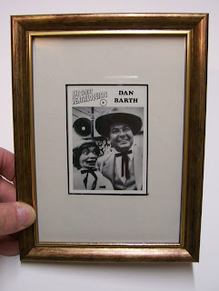

#45 Ventrilo-Card
2/22/2010
{kind=link}

Dan Barth
(Card #9, Set #4)
Dan Barth was born on June 3rd, 1943 in Peoria Ill., "the toughest town in show business." He learned his first card trick when he was nine. As a teenager Dan passed the time at Harold Martin's magic shop, hearing the tales of old vaudeville.
In 1969, Dan met movie start and vaudevillian Max Terhune on a train. The two developed a lasting friendship, and Max taught Dan ventriloquism. In 1973, Dan started performing "Barth's Old Time Medicine Show," a tribute to old time entertainers. Dan has been featured on the PBS TV series "Fold Stories" and was creator, host, and co-producer of "Americana On Tour."
Today, Dan tours nationwide, playing major fairs, festivals, and special events performing with his Pinxy figure "Max", named in honor of his late friend and teacher, Max Terhune.
* * * * *
The above was written and copyright 1995 by OO-LA-LA, INK. I just received this note from Doc Lowry: "He (Dan) lives in Congerville, Illinois with his wife and still does what you have on your blog (above)." www.danbarth.com
(Card #9, Set #4)
Dan Barth was born on June 3rd, 1943 in Peoria Ill., "the toughest town in show business." He learned his first card trick when he was nine. As a teenager Dan passed the time at Harold Martin's magic shop, hearing the tales of old vaudeville.
In 1969, Dan met movie start and vaudevillian Max Terhune on a train. The two developed a lasting friendship, and Max taught Dan ventriloquism. In 1973, Dan started performing "Barth's Old Time Medicine Show," a tribute to old time entertainers. Dan has been featured on the PBS TV series "Fold Stories" and was creator, host, and co-producer of "Americana On Tour."
Today, Dan tours nationwide, playing major fairs, festivals, and special events performing with his Pinxy figure "Max", named in honor of his late friend and teacher, Max Terhune.
* * * * *
The above was written and copyright 1995 by OO-LA-LA, INK. I just received this note from Doc Lowry: "He (Dan) lives in Congerville, Illinois with his wife and still does what you have on your blog (above)." www.danbarth.com